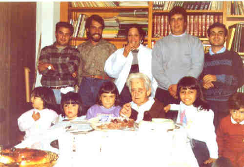
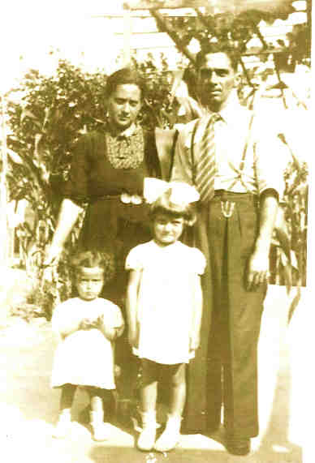

Marianina Petrella
- Nascida em: 5 Ago 1901, Fazenda Neca Junqueira, Ribeirão Preto - Sp
- Casamento: Eugênio Colucci em 12 Fev 1934 em São Paulo, Sp
- Falecido: 9 Abr 1992, Brooklin - Sp/Sp com 90 anos de idade

 Notas Gerais: Notas Gerais:
Marianina Petrella, minha mãe, nasceu em 05-08-1901 na fazenda Neca Junqueira, comarca de Ribeirão Preto - SP, onde foi registrada em 20-08-1901.
Com a sua prodigiosa memória, lembrando fatos e nomes do passado, ela foi a autora moral desta genealogia da família, sendo a valiosa fonte de consulta desta pesquisa, e prestando, assim, uma enorme colaboração na realização deste trabalho.
Mamãe, era uma pessoa muito meiga, e muito carinhosa para com os familiares.
Passou sua infância em Neca Junqueira até 1916. Neste período e local, ajudava os pais na colheita e peneiramento de café. Aos 9 anos de idade (1910), por causa do pó proveniente da seleção, contraiu uma infecção na vista e teve que ser tratada num hospital em São Paulo.
Nesse hospital, contraiu sarampo e por este motivo teve que ficar no isolamento.
Depois de curada, ficou na casa dos seus padrinhos, em São Paulo e, posteriormente, retornou para Neca Junqueira.
Daí, veio juntamente com os pais, a irmã Luísa e os irmãos Ercole e Antônio Isaias, para a
capital de São Paulo, no bairro do Brás, onde moraram na casa n° 229, da rua Visconde de Parnaíba.
Mamãe ficou neste local com a vovó (já que o vovô tinha falecido e seus irmãos tinham
casado), até o seu matrimônio, no ano de 1934.
Em 1917, Marianina completou 16 anos de idade. Precisava trabalhar para ajudar no orçamento doméstico mas a idade não permitia. Com o registro de nascimento da irmã Ermínia (nasceu em 1893), conseguiu arranjar emprego na tecelagem Maria Angela (do grupo Matarazzo), que ficava perto da sua casa, onde trabalhou até a época do seu casamento.
Quando começou a namorar com o papai, um dos passatempo era ir dançar no clube Piratininga, localizado na Av. Rangel Pestana . Eles gostavam de dançar, no entanto, havia um porém; a minha vó Filomena ia sempre junto.
Casou em São Paulo -SP no dia 12-02-1934, com papai, Eugênio Colucci (nascido em 11-02-1903 SP-SP), filho de Stefano Colucci nato em 1861 e Maria Mira, nata em 1878, ambos da Comune de Baiano - Província de Avellino - Itália.
Como o meu pai já trabalhava no Rio de Janeiro desde 1933, após o casamento, mamãe foi morar nesta cidade onde, em 1934, nasceu seu primeiro filho, Stefano. O parto foi muito difícil e demorado, o que prejudicou a criança, que apesar de forte (5 kg.) não resistiu e faleceu no mesmo dia. Mamãe permaneceu no Rio até fevereiro de 1935, voltando novamente para São Paulo, onde foi morar na rua Conde de Sarzedas, na Sé, e onde nasceu minha irmã, Maria Helena (Zinha), em 1936.
Em 1937, foi morar no Brooklin, na rua Francisco dias Velho n° 820, onde eu nasci, em 1938.
Um dos passatempo de meu pai era o futebol. Não jogava, mas gostava de assistir ao futebol varzeano e ser juiz em partidas que, na época, eram consideradas grandes jogos.
Por causa desse prazer, fez parte da diretoria do clube Portuguesa do Brooklin.
Segundo Carlinhos Natrielli, "o clube tinha esse nome porque os diretores fundadores (Augustinho, o Chico florista, o Coelho, o padeiro Sr. Artur Salgado), eram portugueses.
O campo da Portuguesa estava localizado entre os atuais Banco Bradesco, na Av. Morumbi com a Santo Amaro, e Banco Itaú, na Av. Santo Amaro com a rua Pássaros e Flores.
Atravessando a rua onde hoje é o colégio Meninópolis, era o campo do Brooklin, todo cercado com sebe viva de ciprestes, e nele jogava a família dos Rivellino.
Geralmente, a Portuguesa sempre ganhava do Brooklin.
No local do supermercado Pão de Açúcar, na Av. Morumbi com a Santo Amaro, no passado era a chácara Preferida (propriedade da Loterias Preferida).
Onde hoje é o Banco Bradesco, antigamente era uma grande padaria. Na sua calçada, bem na esquina, havia a bomba manual de gasolina do sr. Roberto. Ela era uma pequena torre tendo na sua parte superior um bujão de vidro transparente devidamente marcado. Por meio de uma alavanca de vaivém, a gasolina era bombeada para o bujão na quantidade solicitada, 10 litros, 20 litros etc.. Isto feito, ele colocava a mangueira no carro, abria o depósito e deixava esvaziar.
No mesmo lugar, posteriormente, ele instalou uma bomba elétrica.
Entre os jogadores da Portuguesa, para a família, destacavam-se:
Xexê (Carmine Natrielli) que jogava muito bem. Era um jogador clássico e um grande
driblador. Não tinha potência no chute, mas era o artilheiro do time.
Feiticinho (Arnaldo F. de Macedo) jogava na meia esquerda, também era craque. Seu pai, oTio Feitiço - Luís Macedo, e também meia esquerda, foi um jogador internacionalmente conhecido. Começou jogando na várzea, no Ítalo Lusitano. Posteriormente, em 1938, sagrou-se campeão mundial interclubes, no torneio disputado na Itália, jogando pelo Penãrol do Uruguai. Depois, jogou no Santos, onde encerrou a carreira.
Toninho (Antônio Natrielli), jogava na defesa e era considerado um bom marcador."
Como profissão, meu pai era modelador de calçados, mas sempre sentiu prazer da vida ao ar livre; gostava da terra, das árvores e dos animais.
Todos os dias, acordava às 5 horas, regava as plantas com a água que tirava do poço (essa época era a década de 1940), e depois disso ia do Brooklin, à rua 25 de Março, trabalhar.
Quantas sementes e mudinhas de árvores frutíferas plantou, cuidou e viu vingarem no seu terreno, apenas por satisfação em manter as suas plantações.
Fora as plantações de hortaliças e legumes, ele tinha no pomar as seguintes árvores frutíferas: abacateiro, três pés de laranja lima, mexeriqueira, limoeiro, goiabeira, caquizeiro, lima da Pérsia, pessegueiro, um pé de laranja azeda, um pé de limão francês (laranja capeta), bananeiras, pitangueira, um pé de uvaia, dois caramanchões (um com parreira de uvas brancas e outro de uvas rosadas), maracujá e, margeando as laterais do terreno, 28 ameixeiras (nêsperas). Essas ameixeiras serviam de mourões onde eram presos os fios de arame farpado para cercar os lados da propriedade.
No fundo do quintal, havia uma sebe de bambu, onde ele criava e sempre tinha, em média, 100 galinhas e uma cabra com cabritinhos (tendo assim leite diariamente para o consumo da família). Este cercado tinha 100 m2 (10m X 10m).
Meu pai, trabalhando na cidade e tendo irmãos casados morando na Moóca, combinou de almoçar na casa de cada um, uma vez por semana. Para " mostrar seu trabalho", levava com prazer e orgulho todos os dias, uma cesta pesada e cheia de verduras, hortaliças, frutas e ovos para o irmão onde ia almoçar.
Notem que todos os meus tios trabalhavam e nenhum deles necessitava dessa "cesta". Era apenas uma satisfação pessoal dele dizer que era colhido na sua casa.
Na época de Natal, apetitosos cachos de uvas eram colhidos e distribuídos entre os familiares e amigos.
Papai, era muito alegre e muito brincalhão. Enquanto viveu, desfrutou bons momentos em contato com os familiares e com a natureza.
Eugênio Collucci faleceu no dia 19 de fevereiro de 1947, uma quarta-feira, aos 44 anos de idade e seu corpo foi sepultado no Cemitério do Brás antigo, Quarta Parada, na campa da família.
C. as. As plantações permaneceram na casa após a morte do Eugênio e todos sobrinhos- netos da Marianina iam constantemente degustar as frutas nos pés.
É deveras curioso porque, na casa do Nunzio, irmão da Marianina, e que morava perto, havia um pomar bem maior e repleto de variedades frutíferas, porém na casa da Marianina sempre havia crianças comendo frutas.
Tenho aqui que prestar uma homenagem à minha mãe, que nessa fase difícil, com 46 anos de idade, conseguiu coragem para superar sua dor e ao mesmo tempo consolar eu e minha irmã, ainda atordoadas com a ausência do papai.
Com a sua morte, a renda familiar diminuiu bastante. Tínhamos uma casa e um amplo terreno, mas não era o suficiente para garantir a subsistência das três perante o futuro.
Futuro que todos víamos com tristeza, sem a presença amorosa do marido e pai carinhoso que tão cedo partiu deste mundo.
A vida continuava e minha mãe se viu à frente das despesas naturais da manutenção familiar. Diante da batalha e não medindo esforços, conseguiu enfrentar um trabalho duro para o sustento da casa.
O trabalho e a batalha da mamãe duraram mais ou menos nove anos, ou seja, até a época que minha irmã casou. A Zinha e o Léo resolveram reformar a casa e ficarem morando lá, pois com isso ajudariam a mamãe.
Pouco tempo depois, eu também casei, e aí praticamente terminaram as lides para a mamãe. Com a chegada dos netos, começaram as atribulações de uma casa com crianças.
Mamãe permaneceu nesta casa até a morte de minha irmã e, depois, veio morar comigo onde ficou até seu último dia.
Ela era incansável, sempre querendo ajudar no serviço doméstico. Cozinhava muito bem. Preparava comidas típicas italianas saborosas e com a maior facilidade.
Aqui vale lembrar uma comida típica porém simples, que ela preparava e que ficou marcada.
Era o nhoque (gnocchi) de batata doce. O sabor adocicado da batata, contrastava com o molho de carne e o queijo parmesão. Era uma delícia.
Lembro também que o Miguel certa vez trouxe de uma viagem uma cesta com rãs, que ganhou de presente. E aí o que fazer com elas? Calmamente mamãe olhou dentro da cesta e disse:
-Esperem um pouco que vou prepará-las!
Ficamos pasmos, porque nunca a mamãe tinha feito rã para nós. Depois de algum tempo estavam prontas deliciosas rãs a milanesa.
Perguntamos onde tinha aprendido, e ela disse que quando veio morar no Brooklin, fazia rãs freqüentemente para a sua mãe, a vovó Filomena, que morava com o tio Ercolino na casa vizinha a nossa.
Quanta coisa mais poderia relatar sobre mamãe!
Das muitas recordações, uma há que merece ser preservada, por fazer parte marcante até hoje, na memória dos netos. Refiro-me às tradicionais comemorações da Páscoa e do Natal, reunindo festivamente os parentes e amigos.
Nessas ocasiões, ela começava seus preparativos uns 15 dias antes, sempre entusiasmada a preparar alguma novidade.
Acredito que esse espírito de confraternização da Páscoa e do Natal seja uma herança que herdou dos seus irmãos e dos seus cunhados, que sempre foram muito festivos.
Fora as comidas típicas, na Páscoa, fazia cavalinhos de massinha para os netos e, para as netas, uma boneca, ambos com um ovo colocado no meio.
No Natal, e com antecedência, preparava as famosas scioffa (sic.) ou crostoli alla romagnola, que é uma massa frita entrelaçada, caramelada e polvilhada com açúcar e canela, e ainda, os deliciosos struffoli que eram disputadíssimos. Aprontava também uns saquinhos que enchia com diversos tipos de balas e chocolates, fazendo questão de presentear os netos e, depois, as bisnetas, com todo o sacrifício que sua aposentadoria permitia.
Mamãe irradiava felicidade, vendo a prole ali reunida em franca camaradagem e harmonia.
No dia 9 de abril de 1992, uma quinta-feira as 11:30 hs., em nossa casa, mamãe partiu para os Jardins do Senhor. Partiu como sempre viveu: serenamente. Estava com 91 anos de idade e ainda sabia sorrir e afagar os seus entes queridos.
Foi enterrada no Cemitério do Brás, no túmulo da Família Colucci (família do papai).
Deixou boas lembranças entre os amigos, familiares e, principalmente, entre os netos que desfrutaram do seu amoroso convívio.
Eventos notáveis em Sua vida foram:

(Clique na Foto para vê-la no Tamanho Original)")
• fotos: Neuza - Marianina - Maria Helena.

• fotos: Marianina com netos e bisnetos.

• fotos: Marianina - Eugênio - Neuza e Maria Helena.(1940)

(Clique na Foto para vê-la no Tamanho Original)")
• fotos: vó Marianina - Heliane Maria com Antônio Augusto - Ailton - Deseireé Helena.

(Clique na Foto para vê-la no Tamanho Original)")
• fotos: vó Marianina 83° aniv. de costas tia Ermelinda e Nunciata.
Marianina casad[:o::a] Eugênio Colucci, filho de Stefano Colucci e Maria Mira, em 12 Fev 1934 em São Paulo, Sp. (Eugênio Colucci nasceu em em 11 Fev 1903 em Sp-Sp e faleceu em 19 Fev 1947 em Sp-Sp.)
|


(Clique na Foto para vê-la no Tamanho Original)")